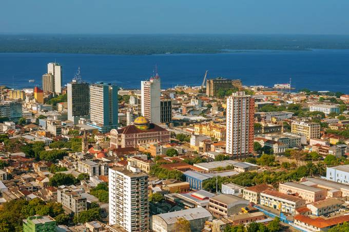

 Imagem de ManausManaus, nos bancos do Rio Negro no noroeste do Brasil, é a capital do vasto estado do Amazonas. Trata-se de um ponto de partida importante próximo à Floresta Amazônica. A leste da cidade, o Rio Negro, escuro, converge para o Rio Solimões, barrento, resultando em um fenômeno visual incrível chamado de "Encontro das Águas". A combinação dos afluentes forma o Rio Amazonas.
Manaus-Amazonas
Aracaju
Imagem de AracajuAracaju é a capital do estado de Sergipe, na costa nordeste do Brasil. É conhecida pelas praias, incluindo a Praia de Atalaia, ao centro. Junto à praia, o Oceanário de Aracaju, em forma de tartaruga, possui arraias, tubarões, enguias e tartarugas marinhas, além de exposições práticas. O passeio na marginal, a Passarela do Caranguejo, está repleta de restaurantes de peixe e marisco e é marcada por uma enorme escultura de um caranguejo.
Aracaju-Sergipe
Cuiabá
Imagem de CuiabáCuiabá é uma cidade nas margens do rio Cuiabá e capital do estado de Mato Grosso, no centro do Brasil. É conhecida como a porta de entrada para as zonas húmidas do Pantanal do Norte. A arquitetura colonial e a Praça da República, repleta de árvores, ficam no centro, juntamente com as torres do relógio da moderna Catedral de Bom Jesus. No Museu Histórico de Mato Grosso, nas proximidades, pinturas e modelos retratam a história e as batalhas da região.
Cuiabá-MatoGrosso
São Paulo
Imagem de São Paulo
A fundação da cidade de São Paulo aconteceu no local conhecido como Pátio do Colégio, no dia 25 de janeiro de 1554. A edificação foi construída pela missão jesuítica liderada pelos padres José de Anchieta e Manuel da Nóbrega, com a intenção de catequizar as populações indígenas que viviam na região.
São Paulo-São Paulo
Porto Alegre
Imagem de Porto AlegrePorto Alegre é a capital do estado de Rio Grande do Sul, no sul do Brasil. Na praça principal, a Praça Marechal Deodoro, encontra-se a Catedral Metropolitana, de estilo renascentista, com murais religiosos no exterior. O Palácio Piratini, de estilo neoclássico, é a sede do governo estadual. O Theatro São Pedro, do século XIX, fica nas proximidades. A cidade é conhecida como uma porta de entrada para os enormes desfiladeiros do Parque Nacional de Aparados da Serra.